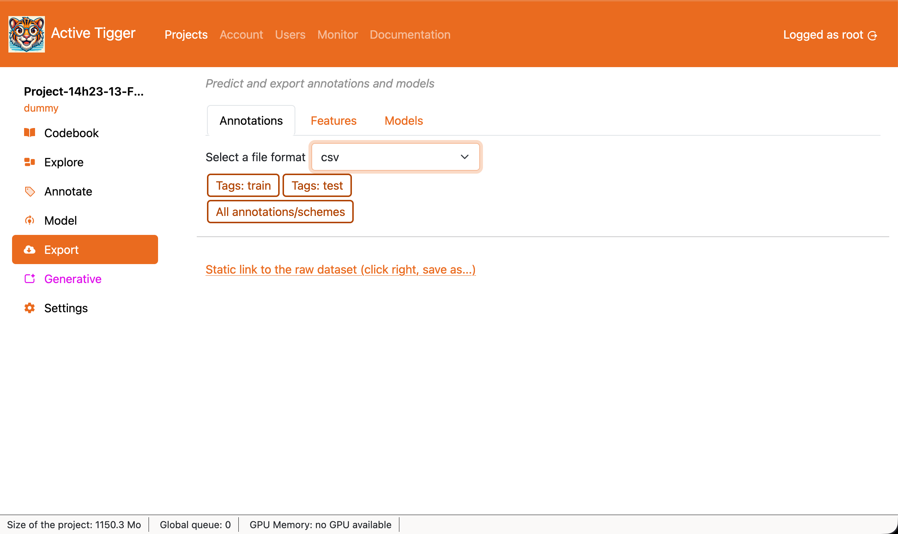
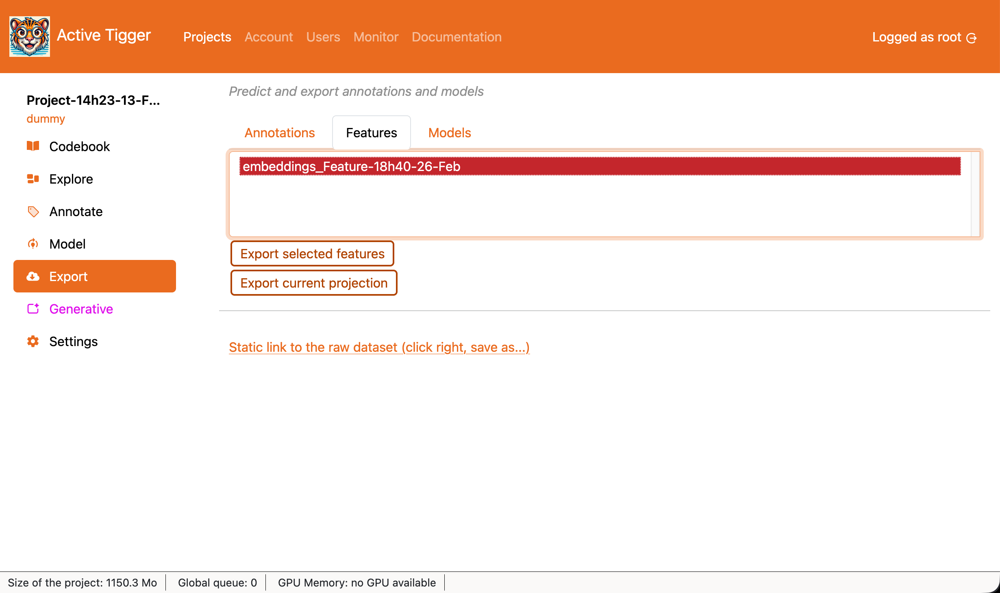
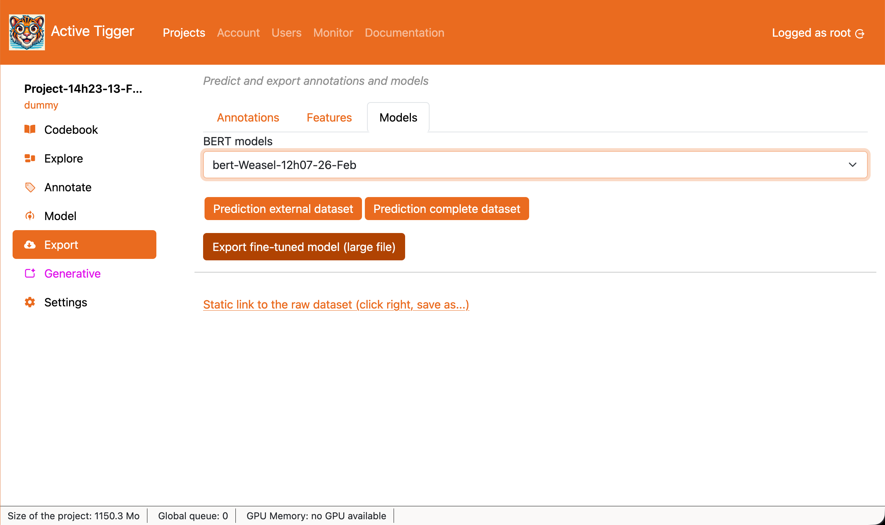

Export page
On this page, you can export your existing data, annotations, and models.
Annotations
This tab allows users to dowbload annotated datasets (train, test, validation or all )

- Tags: train, Tags: test, Tags: eval to download the annotations for the train, test or valid dataset. Text inputs without an annotation are dropped.
- All annotations schemes to download the the full dataset (train, test and eval) with all columns from the original dataset and a column per scheme. Text inputs without annotations are included.
- Static link to the raw dataset (click right, save as...) to download the the full dataset (as a Parquet file) as uploaded when creating the project.
Features

- Export selected features to download the features and the corresponding index.
- Export current projection to download the projection's nodes' coordinates computed in the Visualisation tab of the Explore page and the corresponding index.
Models

- Prediction external dataset to download the features and the corresponding index.
- Prediction complete dataset to download the projection's nodes' coordinates computed in the Visualisation tab of the Explore page and the corresponding index.
- Export fine-tuned model to download the features and the corresponding index.